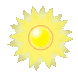

plantas versus sonbis
Plantas contra Zombis es un videojuego de estilo tower
defense desarrollado y publicado por PopCap Games para Microsoft Windows, iPod, iPhone, Android, Bada, Playstation 3, Xbox 360, Windows Phone 7, PS Vita, Nintendo DS, Nintendo DSi, Nintendo 3DS y Mac OS X,
lanzado al mercado el 5 de mayo de 2009. Se distribuye
en formato físico, a través de su página oficial o por Steam.la primera entrga nos deja jugar solo con Plantas
pero con las demas entregas se a popido eleger entre el bando planta o el bando de los zombies

bando planta
estan de el lado de crazy dave para proteger a los huanos de los zombies que quieren comer tu cerebro
se encuentran en el jardin,pero an evolucionado a tal punto que se pueden mover sin la necesidad de estar plantadas al suelo
todo el tiempo.

bando zombie
liderados por el dr.zomboss,trataran de conseguir esos deliciosos cerebros cueste lo que cueste
hasta si implica arriesgar su segunda no vida,aunque algunos se han hecho vegetarians accidentalmente de tanto comer plantas,
pero au no los detiene de conseguir esos preciados cerebros,cerebros,cerebros,braaaaaaaaaaaaaaaaaaaiiiiiinnzzzzzzzzzzzz